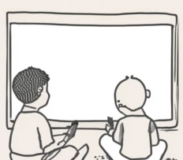

The Original Goal
I dislike subscription services -saying that I'm not a fan of them is an understatement. Recent years have demonstrated (Hulu, Amazon Prime, Netflix, Disney, HBO etc.) that, despite increasing subscription fees, quality of service for the consumer continues to decline. Advertisements are inserted into the media, despite having paid to watch it. The media that we originally signed up to watch gets pulled from their service so we lose access to the content, or the media is moved to a different service so now we have to get two subscriptions. The only thing that one might successfully argue has improved is convenience associated with the subscription services.
Having such a perspective, for years, I have felt comfortable streaming media online from third-party streaming sites that do not require sign-up or charge fees under fair use. Unfortunately, copyright holders have been quite proficient at targeting these websites, and the quality of service on those websites has since declined quite substantially, impacting convenience (as a result, my three-year old knows and uses the term 'buffering').
My original goal with learning to self-host my own media library was admittedly a bit vague: I wanted to do more than have some external hard drives with directories of files, but I wasn't certain I wanted to venture back into peer-to-peer file sharing after basically a decade of not doing so. There is additional risk with file sharing, and technology has gotten so complicated! I didn't understand most of what I was doing when I was downloading software from random sources on Napster and Limewire and cracking the software to use it without a key or using a key generator -I just wanted to play Age of Empires! The most recent time I'd torrented, I received a nasty-gram from my VPN provider so I hadn't attempted that since. (all of this is completely hypothetical; I would never do something so illegal and irresponsible!)
Eventually, I fell into an echo chamber online that was full of complete nerds and digital anarchists, and I initially didn't quite realize how polarized some of the group was. That echo chamber led me to learn about Linux, open-source software and self-hosting data and services. This latter point overlapped neatly with my frustration over lack of digital privacy, the normalization of extreme data leaks and leaks of the sensitive information of myself, my spouse and my infant child.
How It's Meandered
The digital anarchists touted a particular suite of software as making it elementary to access one's desired media, organize it and make it available to users -perfect! This is exactly what I was looking for: something presentable, navigable and easy to use for my spouse and small children. This suite of software was most easily installed on Linux, and I'd been looking to jump-ship from Windows at home for a while. I started ordering hardware to convert my desktop gaming pc (I'm more of a console guy anyways) to a home media server, installed Linux Mint Debian Edition (LMDE) on my laptop and researched home server operating systems. My interest in planning for the future (scalability), desire to customize and lack of familiarity with Terminals led me to Unraid, a proprietary operating system based on slackware Linux that is wrapped in a friendly GUI.
Within the year, I had initiated enough projects that I felt like a golden retriever in a tennis ball court. Everything seemed so logical at the time, but I look around and see miscellaneous hardware from barely-begun or half-complete projects.
Where I'm At
Current hardware and current function:
- Tower: primary Unraid server. 16TB HDD, 4TB NVMe, 64GB DDR4, 17 Docker containers (mostly turned off and not fully configured or just not fully utilized -I need systems/habits to facilitate some of it.). Roughly 6.5TB of the 16TB are consumed with media and documents. I have a cloud backup of the boot media and some local backups of the container configurations.
- Hypervisor: proxmox server with amount of NVMe storage and separate drives for yadayada. I've actually used this more than I anticipated, but it's also not as cool as I thought it would be. It's mostly useful for school, so far.
- Synology DiskStation: 12-bay Synology DiskStation. It came with a small NVMe cache drive, and I just haven't made the time to reflash the firmware and to install the OS and configure another layed of my backup solution. I'd like to avoid backing up most of my bulk media storage, but some of that goal depends on me figuring out ZFS for my storage drives in my Unraid box.
- Laptop: Primary workstation. Provides local repository for personal notes accessed through Obsidian.
- Desktop:
- Firewall box:
- N100 Mini-pc:
- RaspberryPi Zero:
- Samsung Galaxy Tab A9:
- Too many routers:
Cloud services and function:
- Codeberg: remote repository for personal notes accessed through Obsidian
- Cloud server
I've continued to run into some technical skill roadblocks, and they seem to bring me back to the same thing: I need to learn more.